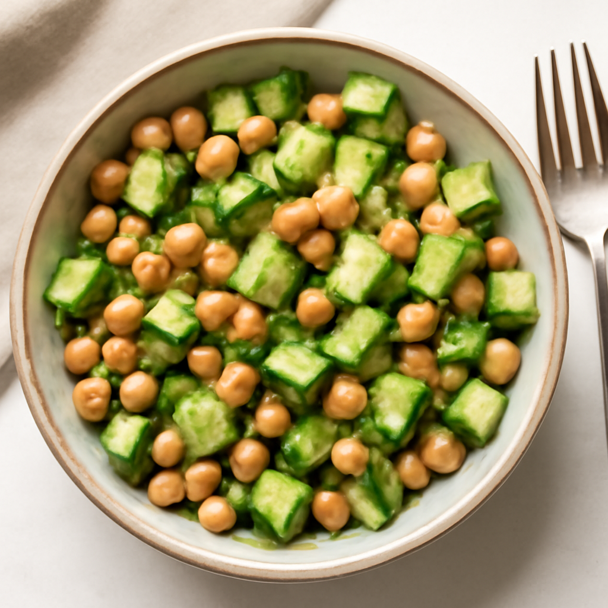

Friday — Chickpea Salad with Cucumber and Avocado

Cook Time: 15 minutes
Method: No Cooking
veganquick15 minutes
Ingredients for 6
- 2 cans chickpeas (15 oz each)
- 1 cucumber
- 1 avocados
- 1 cup cherry tomatoes
- 1 lemon (for juice)
- Salt
- Pepper
- Fresh herbs (mint or cilantro)
Instructions
- Rinse and drain chickpeas. Chop cucumber and avocado into small cubes and halved tomatoes. In a large bowl, combine all ingredients.
- Drizzle with lemon juice, season with salt, pepper, and toss gently.
Toddler Notes
- Mash avocado and chop vegetables into small pieces to prevent choking.
← Back to weekly plan